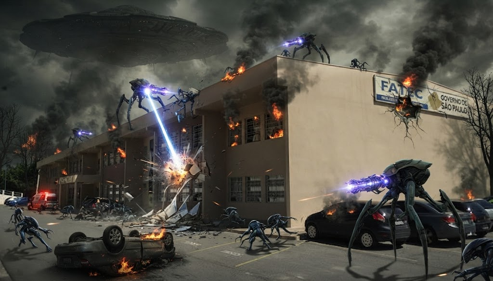
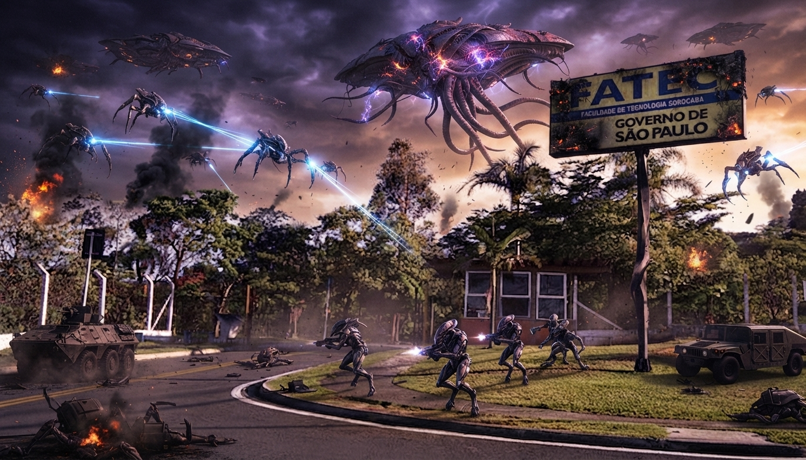

Campus
Naves alienígenas atacam a Fatec Sorocaba e interrompem aula de Banco de Dados
Seres de outro planeta pousaram perto do Além Ponte na tarde de ontem. Alunos dizem que a maior preocupação era a entrega do trabalho.

Por volta das 15h de ontem, um objeto luminoso desceu sobre a região do Além Ponte e parou sobre a Fatec Sorocaba, mudando a rotina do campus. Segundo testemunhas, três naves cercaram o prédio e ocuparam o estacionamento, onde pousaram sem pagar a vaga.
Os alienígenas, de pele esverdeada e olhos grandes, saíram das naves e caminharam até a entrada da faculdade. "Eu achei que fosse a apresentação do grupo ao lado", contou um estudante que preferiu não se identificar. "Só percebi quando o professor saiu correndo."

Ninguém entendeu o que eles diziam, mas o tom era de quem queria conversar com o coordenador.
A aula de Banco de Dados foi interrompida, mas a turma manteve a calma. Muitos alunos aproveitaram a confusão para gravar vídeos, e a rede de Wi-Fi do campus, que já era lenta, caiu de vez. Os visitantes teriam tentado se conectar e desistido em seguida.
Moradores do bairro Além Ponte também relataram luzes intensas no céu e cachorros latindo por mais de uma hora. A direção da Fatec informou que as atividades seguem normalmente, mas que a entrega de trabalhos pode ser adiada "em casos de abdução comprovada". Até o fim desta edição, nenhum aluno havia sido levado.